Next Steps in Python
Anaconda
If you have Anaconda installed on your computer, use that for the sessions for the next two days. Follow the instructions in the first tab titled ‘Anaconda’.
Alternative 1: Kaggle
If you don’t have Anaconda installed, the next preferable option is Kaggle. Follow the instructions in the second tab titled ‘Kaggle’.
Alternative 2: Jupyter online
If you not able to access Anaconda or Kaggle, your final option is Jupyter online. Follow the instructions in the third tab titled ‘Jupyter online’.
Instructions
- Open Anaconda Prompt
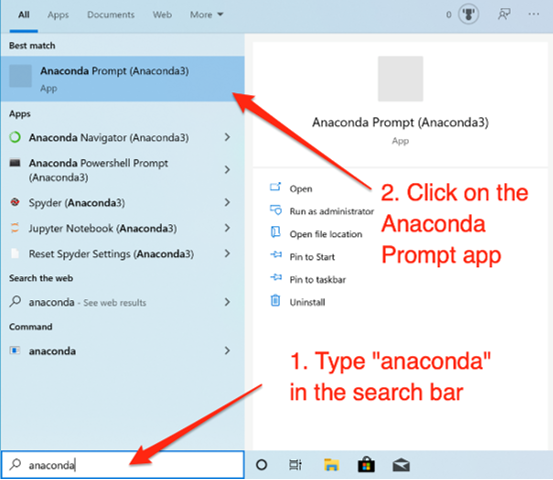
- Once the Anaconda Prompt is open, navigate to the desired folder using the cd command.
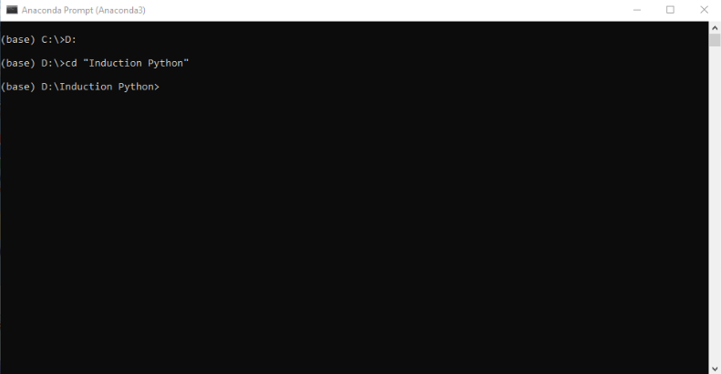
- Once you are in that specific folder type jupyter notebook and press the enter key.
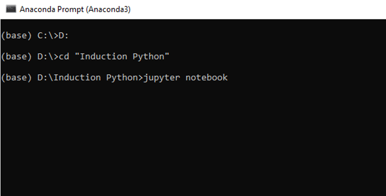
- The Jupyter server will start. You should see some server logs printed. Do not close this window, minimise it.
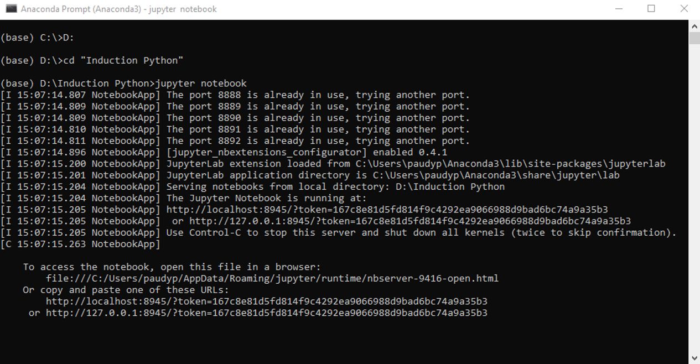
- Shortly after, a browser window will open, showing the files and folders located in the folder where you started the Jupyter server (in my case, this folder is
D:/Induction Python).
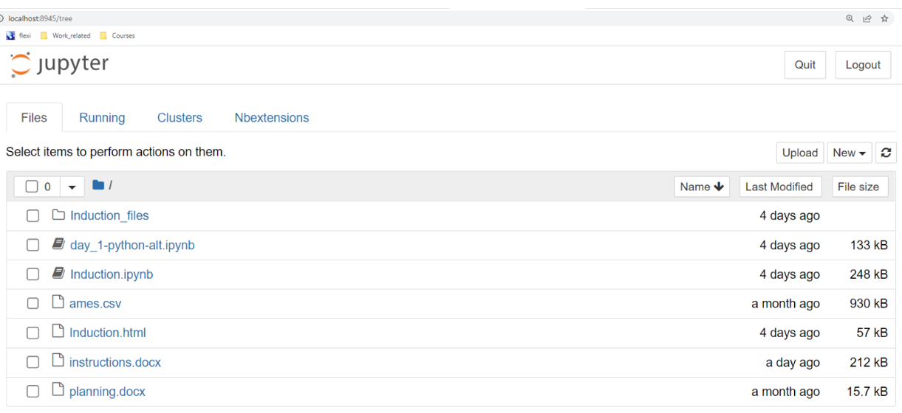
- At the top-right of this file view, click New and select Python 3 from the dropdown. This will open a new Jupyter Notebook and you’re ready to start!
Go to Kaggle.com and create an account if you don’t already have one.
Log into you Kaggle account.
In the left menu, goto Create > New Dataset
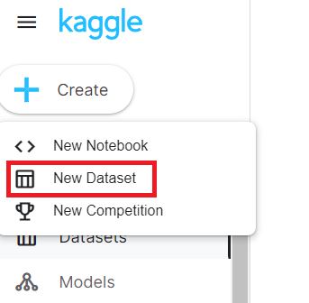
- In your file explorer, click and drag the csv file into the highlighted area.
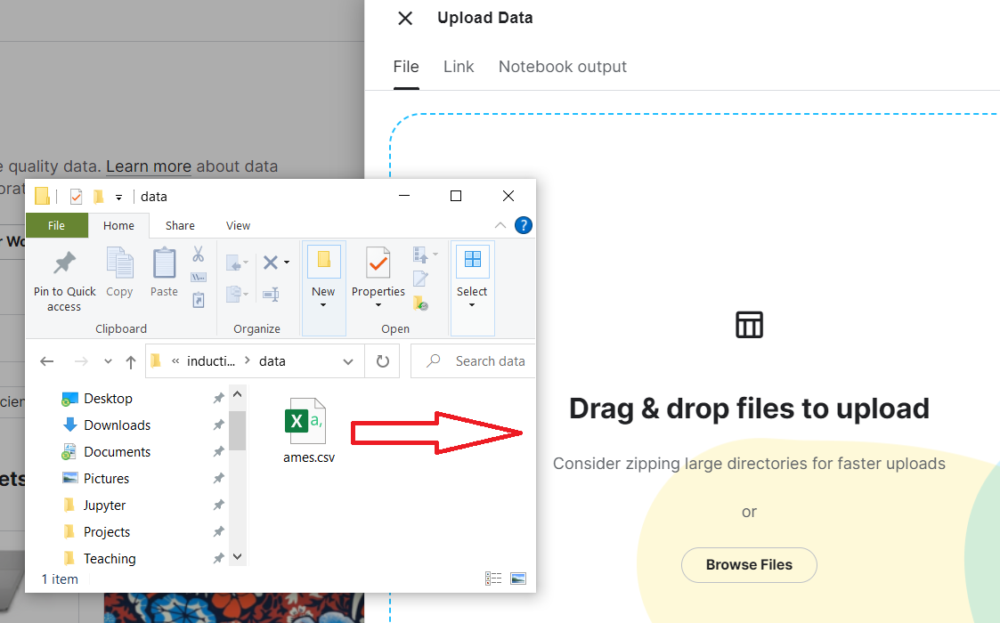
- Name the dataset
Ames_datasetand click Create.
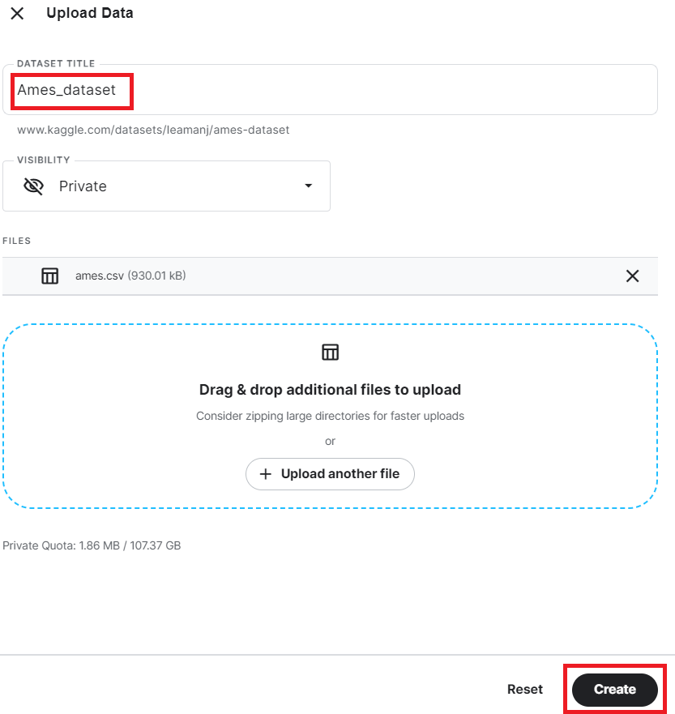
When you receive the message saying “Success!”, click the X in the top-left of that pane.
In the left menu, goto Create > New Notebook
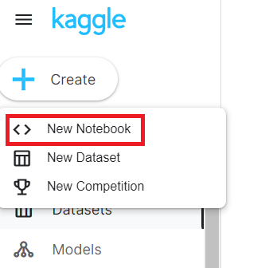
In the right-hand Data panel of the Notebook goto Add Data
In the filters below the search bar click Your Datasets
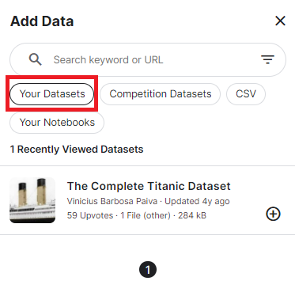
You can now see your dataset
Ames_dataset. Click the + to the right of the dataset name.Click the X in the top-right corner of the Add Data panel to close it.
In the right-hand Notebook panel, click the little arrow next to the name of the dataset.
You’ll now see the name of the csv file we uploaded. To the right of the file name there is a little “copy” icon. You will need this to copy the file path so that you can use the data in these sessions.
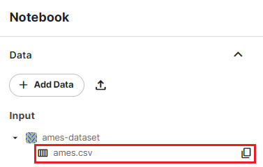
Got to jupyter.org/try and select JupyterLab
Drag the csv file into the left file list
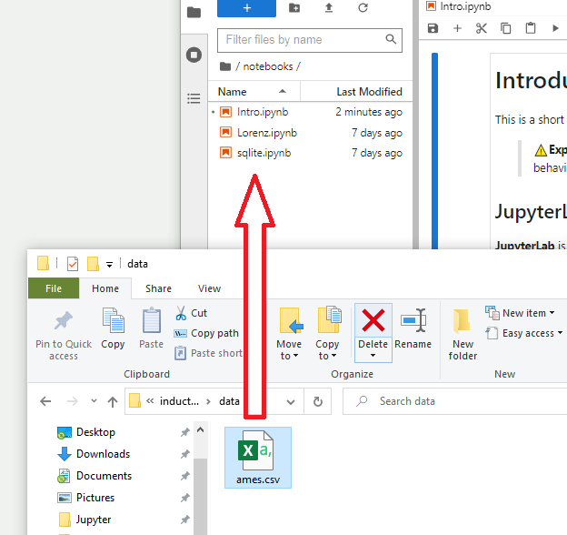